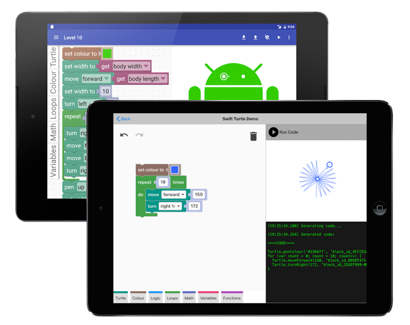

Blockly是Google公司发布的一款可视化编程工具，类似MIT的儿童编程语言Scratch，您不用再考虑冗杂的代码和一大堆语法，类似堆叠积木块一样，只需将模块拖拽到编辑区进行逻辑拼接，即可在构建您的应用程序。此外，强大的代码转换功能和优良的可扩展性，使您可以定制您的专属Blockly。
[Try it !]
了解更多 »
§ Blockly不仅有在线版和离线版本，还有对应的IOS和Android版本。

CONFIGURE »
§ 基于Blockly构建的应用非常之多，如Blockly Games。
GET STARTED »
§ Scratch Blocks，基于Blockly，开启可视化编程新时代。
 LEARN MORE»
LEARN MORE»
自2012年Blockly发布，几年时间过去了，而Blockly却迟迟没有在中小学得到推广、应用和普及。究其原因，一是因为Blockly本身不支持多媒体和图形化的交互方式，不像Pencil Code和Scratch那么形象直观的吸引青少年；二是是因为没有很好的教学案例，顶多被当做配角上几个课时就不了了事，不能形成完整的课程体系，导致无法在中小学课堂教学和推广。
针对上述原因和现状，为了推动Blockly的进一步发展，现发起教学案例征集活动，无论您从事何种学科教学，无论您是否有编程基础，只要您有好的想法、建议或需求，您都可以参与到活动中来。
我们所征集的案例分为2类，

第一类：在现有 Blockly及各子环境（如blockly-games）的基础上，结合您教学学科的知识点、生活小常识、有趣的故事等进行案例的设计，这一类案例直接运用于课堂教学，请您发挥想象力，让它们尽量生动、有创意、新鲜、有趣；如下图，是使用Blockly编写的“求1+2+3+4+…+100之和”，同样的，您可以将数学、物理、化学等学科经典例题，通过Blockly实现，作为教学案例。
第二类：Blockly环境开发，针对其缺乏图形化交互方式这一弱点，如果您有想法来开发一个新的Blockly小环境，希望您将您的想法或作品分享给大家。如下图，是基于Blockly开发的飞机座位计算的小游戏，该游戏通过增加飞机图形，使程序执行结果生动直观的展现，就可以作为一个Blockly基础教学案例，用于让初学者熟悉和认识可视化编程环境。
了解更多 »
此外，除了Blockly教学案例，您还可以提交基于Scratch Blocks设计的教学案例。

了解更多 »
我们会仔细研究您所提交的案例，积极采纳您所提出的建议，经过我们的筛选之后，
如果您的案例、模块、二次开发或者您的想法被选入案例库，谷歌公司会提供相应的荣誉和奖励。
为了 Blockly 的明天，为了让更多一线教师和学生更好的利用如此强大的工具，我们诚挚的希望得到您帮助与支持！
星星之火，可以燎原，也许您的一个思维的火花，可能点燃中国信息技术教育变革的熊熊大火。
加入我们